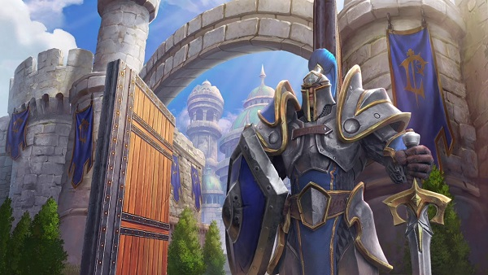
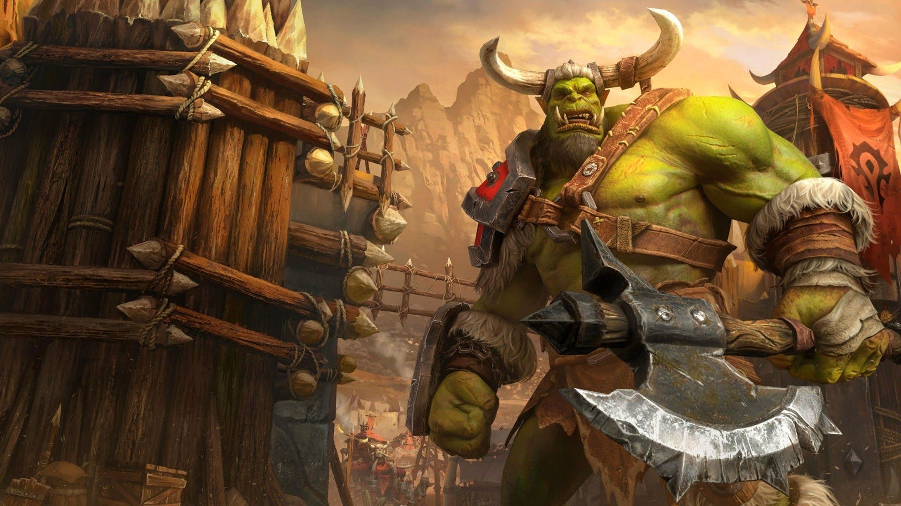
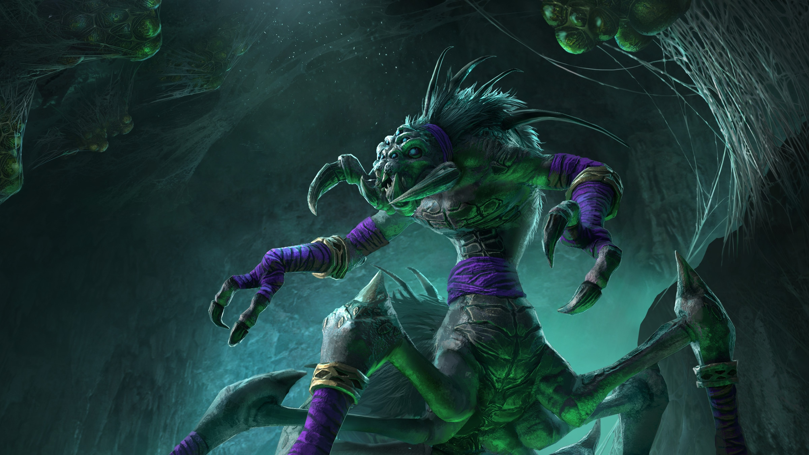
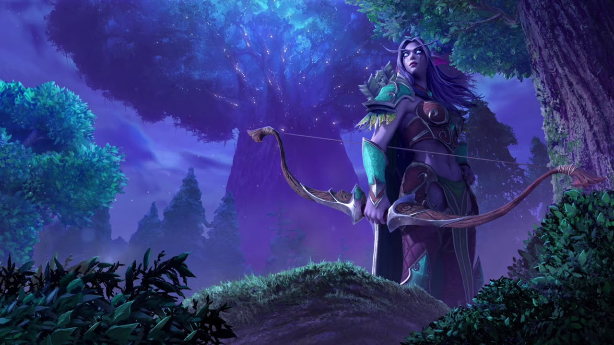

Four Fractions
Alliance
The Alliance has been present in some form in all Warcraft games. In all three real-time strategy games, the Alliance are the protagonists of their campaign, and are one of the two main protagonist factions in World of Warcraft. They are also the primary antagonists of Warcraft and Warcraft II's orc campaigns. They are enemies to the Horde. The major races of the Alliance are the humans, gnomes, dwarves, night elves, draenei, worgen and the Tushui pandaren. Throughout the Warcraft games, the human are modelled on medieval Europe. In Warcraft and Warcraft II they were also depicted as the protagonists of the human campaigns and the antagonists of the orc campaigns; the humans fought for the side of Heaven against the Hellish orcs, though this theme was abandoned in the third game. The humans descended from an ancient nomadic tribe known as the Arathi, who conquered and united the other warring human tribes and founded the empire of Arathor and the great city of Strom, later known as Stromgarde. The Arathi formed an alliance with the high elves of the far north after they aided them in a war against the Amani Empire of Trolls. In World of Warcraft: Wrath of the Lich King it is implied that the Arathi themselves are the descendants of mutated Vrykul.[2] By the time of the first Warcraft, seven kingdoms had arisen from the former lands of Arathor. The primary human faction in the first two games is the Kingdom of Azeroth (later renamed the Kingdom of Stormwind in World of Warcraft). The remaining kingdoms were introduced in Warcraft II, all centered in the northern part of the Eastern Kingdoms: Lordaeron (founder of the Alliance), Gilneas, Stromgarde (the former Arathi capital), Dalaran (home to the Arathi wizards, who became the Kirin Tor), Kul Tiras, and Alterac.
Horde
In Warcraft III: Reign of Chaos, the Horde is led by the young Warchief Thrall after he led an uprising to free the orcs from the vengeful humans of Lorderon. Thrall then led the orcs across the sea to Kalimdor after having a dream with a prophet who told him to travel across the sea to find his destiny, allying with the Darkspear trolls and the tauren. By the time of the orc campaign in Warcraft III: The Frozen Throne, the Horde also includes a few goblins, and it was revealed that the orcs first came from Outland, the shattered remains of their original homeworld Draenor. Later on in the reign of chaos campaign orc commander Grom Hellscream and his men drink the blood of the Pit Lord Mannoroth and became corrupt themselves once more, eventually leading to Grom's death. By the timeframe of World of Warcraft, the Forsaken, a faction of undead who rebelled against the Scourge, have also joined the Horde. The blood elves join the Horde early in the storyline of World of Warcraft: The Burning Crusade. Early in the storyline of World of Warcraft: Cataclysm, Thrall steps down to deal with the Cataclysm, appointing Garrosh Hellscream, son of the former traitor then redeemed hero Grom Hellscream, as Warchief, and the goblins of the Bilgewater Cartel join the Horde. World of Warcraft: Mists of Pandaria saw the Huojin pandaren join the Horde.
Scourge
First introduced in Warcraft III, the Scourge is an army of undead created by the Lich King to destroy all life on Azeroth. It includes undead humans, elves, Nerubians and several other assorted races. The Scourge was created by the Burning Legion as a means of weakening the races of Azeroth, primarily the human Alliance, to prepare for the invasion of the Legion itself. The Legion captured the spirit of the former orc shaman Ner'zhul and forced him to become the Lich King, the power and mind behind the Scourge. As Ner'zhul's power grew, he began to become powerful enough to corrupt paladins to join the Scourge as Death Knights, one of these being Arthas Menethil, heir to the human kingdom of Lordaeron. Ner'zhul began crafting a plan to break out of his imprisonment, and to break away from the Burning Legion. When Kil'Jaeden realized what he was up to, he sent Illidan to destroy the Frozen Throne and Ner'zhul to end his treacherous endeavour. However, Ner'zhul commanded Arthas, his new champion, to come to his aid. Arthas fought Illidan and defeated him, then went to Icecrown and shattered the Frozen Throne, putting on Ner'zhul's helm. Ner'zhul's soul merged with Arthas' mind and body, and they became one of the most powerful beings on Azeroth, as Ner'zhul had planned all along.
Night Elves
Night elves (or kaldorei, meaning "children of the stars" in their native tongue) are one of the oldest humanoid races native to Azeroth. Ten thousand years ago, a schism occurred between the ruling Highborne mages and the rest of the population. The Highborne, led by the malevolent Lord Xavius, tampered with the energies of the arcane, attracting the attention of the Dark Titan, Sargeras, who sent his demonic armies to Kalimdor to try to wipe out all life on Azeroth. Thanks to the help of the Dragon Aspects which were chosen by the Titans to defend and protect the world from any threat, the night elf forces succeeded in preventing the Highborne from allowing the Burning Legion to permanently enter Azeroth, though the planet's continent was shattered in the process. The schism not only destroyed the magical Well of Eternity from which the elves drew their power, but also most of the rest of the continent, resulting in a vast ocean separating the continents of Kalimdor, Eastern Kingdoms and Northrend, and the Maelstrom in the center of the planet. The remaining night elves in Kalimdor guarded a massive World Tree, Nordrassil, which was planted over a second Well of Eternity created by the exiled night elf traitor Illidan Stormrage. Blessed by the Dragon Aspect Ysera, the tree granted the night elves immortality. For the following ten thousand years, the survivors lived peacefully, until the second invasion of the Burning Legion. The races of Azeroth, both Horde and Alliance, together fought the Legion at the peak of Mount Hyjal, until the elves managed to unleash the primal fury of Nordrassil, killing the demon lord Archimonde and defeating the Burning Legion. Since then, the night elves have lost their immortality, and have planted a new World Tree called Teldrassil to try to recover it.
Content
Gallery
Alliance
Horde
Scourge
Night Elves